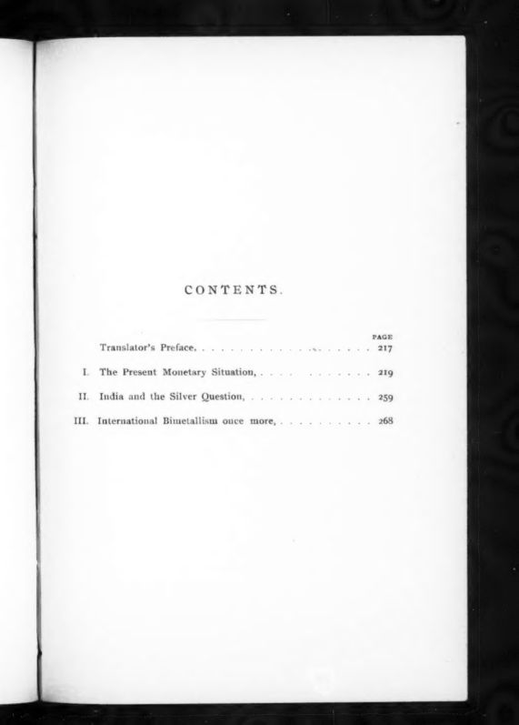

Lexis, 1895: por que o bimetalismo seria um salto no escuro
Leitura: 11 min
Em conferência em Dresden, em 1895, Wilhelm Lexis examinou a queda da prata, a crise da rupia e a promessa do bimetalismo internacional, e concluiu que mais moeda não faria subir os preços.


Em 1871, a Alemanha deu o primeiro passo para reformar a sua moeda, e a lei de 9 de julho de 1873 levou a obra a uma conclusão provisória. Mais de duas décadas depois, a reforma continuava incompleta. Em 1879, quando a prata já havia perdido um sexto do valor, o governo imperial suspendeu a venda dos táleres, as velhas moedas de prata, porque o prejuízo parecia grande demais. Ficou com cerca de 400 milhões de marcos nessas moedas.
É assim que Wilhelm Lexis, professor em Göttingen, abre a conferência que fez em Dresden em fevereiro de 1895, na Gehe-Stiftung. John Cummings, instrutor de economia em Harvard, a traduziu para o nº 4 do primeiro volume dos Economic Studies, de outubro de 1896, junto com dois textos curtos do autor: um artigo sobre a Índia e a questão da prata e uma réplica a um crítico. No prefácio, Cummings diz que a conferência resume as conclusões de uma autoridade reconhecida sobre os aspectos mais gerais da questão da prata e que as mudanças desde 1895 não afetam o argumento.
Quanto custava à Alemanha a prata que ficou?
Lexis descreve o resultado como um padrão duplo “manco”: ouro como padrão, com uma quantidade rígida de prata em circulação. O problema, diz, não era a existência da prata, mas o seu valor. A moeda de três marcos, que todos eram obrigados a receber pelo valor de face, valia em metal 1 marco e 35 pfennigs.
Ele aponta dois riscos. Numa guerra prolongada, com emissões de papel, essa massa de prata de valor fictício poderia virar ameaça. E havia o incentivo à cunhagem privada de moedas com o peso e o título legais, que daria à prata um valor 100% acima do mercado; Lexis sugere proibir a importação de moedas com o cunho alemão, como a Rússia fazia. Há ainda o custo para as minas: 200 mil quilos de prata, que antes valiam 36 milhões de marcos, rendiam então 16 milhões.
A prata barata ajudava a Índia a exportar?
No início de 1870, a rupia era cotada em Londres a cerca de 23 pence; em 1895, entre 12 e 13 pence. Lexis argumenta que, num país que paga ao exterior juros e pensões, o poder de compra interno da moeda cai bem mais devagar do que o câmbio. O governo da Índia remetia a Londres, todo ano, de 16 a 17 milhões de libras esterlinas.
O exemplo é o algodão. Um hundredweight de algodão vendido na Inglaterra por 25 xelins rendia ao comerciante, ao câmbio de pouco menos de 13 pence, 23 rupias; em 1872, com a rupia a 23 pence, a mesma venda rendia 13. Mesmo que preços e salários na Índia tivessem subido 10% ou 12% em rupias, as 23 rupias compravam muito mais. O produtor indiano podia baixar o preço e manter o lucro normal; o americano, que pagava custos em ouro, talvez não cobrisse o custo de produção.
Lexis, porém, não atribui a esse efeito a crise agrícola europeia. As exportações indianas de trigo caíram para 15 milhões de quintais em 1892-93, menos da metade do ano anterior, justamente quando a prata atingia o ponto mais baixo. A explicação, para ele, estava nas colheitas ruins de 1891, nas boas safras seguintes e no trigo argentino. Com a rupia ao valor antigo em ouro, a Índia talvez tivesse vendido 10 milhões de quintais, e não 15: um efeito real, mas pequeno.
O ouro encareceu e derrubou os preços?
Os bimetalistas, defensores da cunhagem livre de ouro e prata a uma razão fixa, atribuíam a queda geral de preços e a depressão posterior à especulação de 1890 a uma valorização própria do ouro. Lexis discorda. A função monetária não recaíra só sobre o ouro: a França e a União Monetária Latina tinham cerca de 3 bilhões de francos em moedas de cinco francos, e os Estados Unidos cunharam US$ 416 milhões sob a Bland Act, de 1878 a 1890, e emitiram mais US$ 151 milhões em notas do Tesouro sob a Sherman Act. Se a escassez de ouro explicasse tudo, pergunta, como os Estados Unidos, com tanta prata e com US$ 346 milhões em notas de curso legal da guerra, tiveram uma depressão tão grande quanto a europeia?
Os bancos centrais também não sugeriam escassez. A reserva do Reichsbank chegara a 1,1 bilhão de marcos; em junho de 1894, o Banco da Inglaterra tinha 14 milhões de libras de reserva acima das notas em circulação; e o Banco da França somava cerca de 3,4 bilhões de francos em metal, cobrindo todas as notas menos cerca de 7%. Em Londres, o desconto caíra abaixo de 1%. Para Lexis, a causalidade é a inversa da alegada.
“A estagnação é, portanto, a causa do excesso de dinheiro ocioso.” (Stagnation is, therefore, the cause of the superfluity of idle money.)
Daí a tese central: o aumento da quantidade de moeda não basta, por si só, para influir sobre os preços. Estes dependem de forças e condições econômicas; a moeda tem papel formal, que pode reforçar uma alta quando as condições reais existem ou agravar uma crise quando falta.
O que aconteceria com uma liga bimetálica?
Lexis admite que uma razão fixa entre os metais, adotada por todas as grandes potências e próxima das condições de produção, poderia manter os dois em circulação. Era o caso no início dos anos 1880, quando se produziam cerca de 900 milhões de marcos por ano dos dois metais, em quantidades quase iguais pela razão antiga. Em 1893, porém, só a prata equivalia, ao valor antigo, a 900 milhões de marcos, e o ouro a cerca de 620 milhões. Com o preço de 60 pence por onça, minas americanas de custo médio de 30 pence teriam dividendos enormes.
Nas contas do autor, com a prata de volta ao valor antigo, entrariam todo ano na circulação 400 milhões de marcos em ouro e 800 milhões em prata. A prata superaria o ouro, o público passaria a preferir o ouro, e um prêmio de 1% ou 2% bastaria para tirá-lo da circulação: o padrão passaria, na prática, a ser só a prata. Se as maiores jazidas de ouro, como ele estima, não durassem mais de quarenta anos, o prêmio só cresceria.
E o agricultor, principal defensor do bimetalismo, não ganharia. Uma alta de preços beneficiaria primeiro a manufatura; os salários subiriam; e o trigo seria o último produto a acompanhar a alta, enquanto terra nova e barata no exterior seguisse competindo com a terra velha europeia. As dívidas, quase todas contraídas já sob o padrão-ouro, não ficariam mais leves, porque a renda líquida das propriedades não subiria na mesma proporção.
“nunca se arriscou um salto no escuro mais temerário” (a more foolhardy leap into the dark, has never been risked)
O salto seria um aumento anual de 1,1 a 1,2 bilhão de marcos em moeda metálica, contra uma média de 450 a 500 milhões entre 1850 e 1870. Lexis compara o efeito à emissão de 600 a 700 milhões de marcos em papel-moeda por ano, uma inflação universal. Não haveria nada parecido com a alta que se seguiu ao ouro da Califórnia e da Austrália, que acompanhou máquinas, ferrovias e bancos novos e terminou na crise de 1857. Para ele, o aperfeiçoamento monetário caminha no sentido contrário: mais crédito bancário e menos metal, como na Inglaterra.
O fechamento da casa da moeda indiana funcionou?
O segundo texto, publicado antes na Neue Freie Presse em 8 de fevereiro de 1895, trata da medida de 26 de junho de 1893, quando o governo da Índia fechou a casa da moeda à cunhagem livre da prata. Com isso, e com o fim das compras americanas, desapareceu um mercado garantido de 2,75 milhões a 3 milhões de quilos de prata por ano. Mesmo assim, a prata caiu menos do que se previa e passou a oscilar perto de 27 pence por onça.
O governo esperava manter a rupia em 16 pence. A Áustria-Hungria conseguira elevar o florim mais de 25% acima do valor do metal só suspendendo a cunhagem para particulares. Na Índia, a rupia ficou entre 12 e 13 pence, mais de 20% acima do valor da prata contida, mas o déficit orçamentário, contado em rupias, aumentou. Lexis explica o resultado pelo comércio de prata em barra: a prata, entesourada em barras e ornamentos, continuou a entrar no país e a concorrer com as letras de câmbio, empurrando a taxa para baixo. Ele estima que a Ásia Oriental absorveria 2 milhões de quilos por ano e que 3,5 milhões de quilos poderiam ser vendidos a 27 pence.
Mudar de opinião é defeito em economia?
A réplica responde ao Dr. Arendt, que o atacara no Deutsches Wochenblatt de 21 de fevereiro de 1895. Lexis distingue primeiro “moeda corrente” de “padrão de valor”: o projeto do presidente Cleveland tratava de notas bancárias e greenbacks, não do padrão. Atribui as dificuldades do Tesouro americano à política monetária do país, às notas de curso legal e às leis Bland e Sherman; com títulos pagáveis em ouro, diz, os Estados Unidos poderiam obter US$ 100 milhões na Europa a 3%.
Arendt o acusava de mudar de opinião sobre o padrão monetário. Lexis aceita a acusação. Em 1873 já temia a desvalorização da prata; em 1881, nas suas “Discussões sobre o problema monetário”, foi mais longe no argumento bimetalista; no congresso de Colônia, em 1882, condicionou qualquer ação alemã à adesão inglesa e propôs a razão de 18 para 1; depois a baixou ainda mais. Arendt, lembra, considerara em 1886 que 600 milhões de marcos seriam o máximo concebível da produção de prata; em 1893 ela chegou a 900 milhões.
“Sempre considerei a Economia Política uma ciência puramente experimental” (I have always considered Political Economy a purely experimental science)
Para Lexis, a questão é sobretudo estatística e depende dos números da produção. Ele cita o período de 1848 a 1859, em que a prata subiu 4,3% em Londres apesar do padrão duplo francês, como prova de que o bimetalismo apenas retarda as mudanças de valor vindas da produção. E fecha dizendo que, se uma liga bimetálica fosse feita, observá-la seria do maior interesse científico, mas que o experimento seria uma vivissecção no corpo político, contra a qual ele adverte.
Na minha leitura
Na minha leitura, o que sustenta o texto é a separação entre moeda e atividade. Lexis não nega que a moeda importe; diz que ela amplifica forças reais e não as cria. O argumento contra o bimetalismo nasce daí e de uma contabilidade simples de fluxos: se o preço legal da prata ficar acima do custo de produção, a oferta responde, e nenhuma razão fixa resiste a uma divergência persistente nos custos dos dois metais.
O caso indiano mostra o outro lado do mesmo raciocínio. Fechar a casa da moeda separou a rupia da prata só em parte, porque a demanda por prata como reserva de valor continuou a concorrer com as letras de câmbio. É um lembrete permanente de que uma âncora cambial depende menos do decreto do que dos canais pelos quais o público pode contorná-lo.
Glossário
- Bimetalismo
- regime em que ouro e prata são cunhados livremente a uma razão legal fixa e ambos servem de padrão.
- Padrão “manco” (limping standard)
- padrão-ouro em que circula, com curso legal, uma quantidade fixa de moedas de prata antigas.
- Táler
- antiga moeda de prata alemã que permaneceu em circulação depois da reforma monetária.
- Moeda divisionária
- moeda de pequeno valor cujo valor de face supera o do metal que contém.
- Council bills
- letras vendidas em Londres pelo governo da Índia, pagáveis em rupias, para obter ouro para as obrigações em libras.
- Prêmio sobre o ouro
- ágio pago pelo ouro em relação ao seu valor legal em moeda de prata ou papel.
- Pence por onça
- cotação da prata em Londres, em pence esterlinos por onça de prata de título padrão.
Fontes
- Translator’s Preface (pp. 217–218). Internet Archive (número completo, PDF)
- I. The Present Monetary Situation (pp. 219–258). Internet Archive (número completo, PDF)
- II. India and the Silver Question (pp. 259–267). Internet Archive (número completo, PDF)
- III. International Bimetallism once more (pp. 268–281). Internet Archive (número completo, PDF)
- Número completo digitalizado (domínio público): Internet Archive.
Documento em domínio público (EUA, publicado antes de 1931), via JSTOR Early Journal Content e Internet Archive. Resumo e comentário do autor deste site, sem afiliação com a American Economic Association. Encontrou um erro? Escreva: a correção é publicada no próprio texto, com data.
← ES 3 · McVey, 1896: o People’s Party lido pelas suas plataformas ES 5 · Hopkins, 1896: quanto valiam as concessões de bondes de Cleveland? →